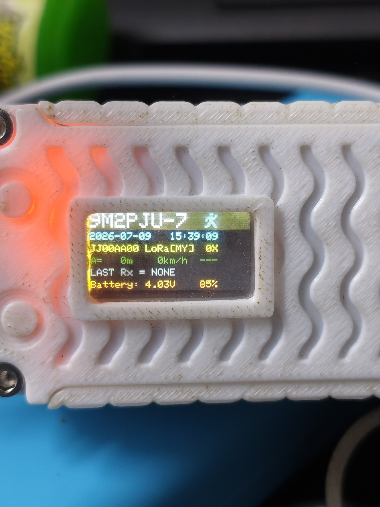

9M2PJU Mod LoRa APRS Tracker
Firmware Web Installer — Heltec Wireless Tracker
Click INSTALL, pick your device's USB port,
and the firmware installs right from your browser.
Wrong browser
You need Google Chrome or Microsoft Edge to install. Firefox and Safari do not work. Please switch to Chrome or Edge.
What you get
- Callsign: 9M2PJU-7 on all 3 profiles
- LoRa frequency: 433.400 MHz (Malaysia)
- LoRa label: LoRa[MY]
- Clock: Malaysia Time (UTC+8)
- APRSMYSunday net check-in & stats query (Messages menu)
- SOTA & POTA spots and alerts (Reports menu)
- HF Prop Report — HF propagation conditions from 9M2PJU-4 bot (Reports menu)
- Centered text on all screens
- Navy blue header bar with yellow text
- Cyan menu items, yellow selection indicator
- Orange button instructions
- Color text for GPS, battery, altitude, messages
- White APRS symbol
- Status bar: GPS lock / BT / idle
- Startup text: "9M2PJU Mod" + version date
- GPS Eco Mode off (GPS always active)
- Profile 3 symbol: motorcycle
- Smart Beaconing tuned for Malaysia (20-33% fewer TX, battery-saving)
How to install
- Use Google Chrome or Microsoft Edge
- Plug in your Heltec Wireless Tracker with a USB cable
- Click the INSTALL button above
- Pick the USB port (usually "USB JTAG/serial debug unit")
- Click INSTALL and wait until it finishes
- Your tracker restarts on its own with the new firmware
If INSTALL fails or your tracker won't start
If the installer cannot connect, put your tracker into download mode first:
- 1. Press both buttons together (BOOT + RST). The screen goes blank.
- 2. Click INSTALL and wait until 100%
- 3. Press the RST button once to start the firmware
Pressing both buttons together puts the tracker into download mode (screen goes blank). After flashing, press RST once to boot into the firmware.

Heltec Wireless Tracker running 9M2PJU Mod LoRa APRS Tracker firmware
After flashing
- Press the RST button once to start the firmware (or unplug and plug back in)
- Settings are ready for Malaysia (9M2PJU-7, 433.400 MHz)
- To change settings, turn on WiFi AP mode on the tracker
- Join WiFi: LoRaTracker-AP / password: 1234567890
- Open 192.168.4.1 in your browser
- To update config only, run:
pio run -e heltec_wireless_tracker -t uploadfs
APRSMYSunday Net Check-In
This fork includes Malaysia's APRS Sunday Net check-in feature. Check in to the net and query net stats right from your tracker — no phone or computer needed.
Menu path: Messages → APRSMYSunday
- Check-In — sends check-in to
APRSMY. With keyboard: type custom text (sent asCHECK #APRSMY <your text>). Without keyboard: sends cannedCHECK #APRSMYSunday Net from LoRa Tracker 73! - Status — sends
STATUSto query current net status - Count — sends
COUNTto query check-in count - Last — sends
LASTto query latest check-in - Top — sends
TOPto query top operators - Me — sends
MEto query your own check-in stats
Replies come back as APRS messages — read them via Messages → Read.
SOTA & POTA Reports
Query SOTA (Summits On The Air) and POTA (Parks On The Air) spots and alerts from the 9M2PJU-4 APRS Bot, right from your tracker.
- Go to Reports → SOTA → Spots — sends
SOTA spotsto 9M2PJU-4 - Go to Reports → SOTA → Alerts — sends
SOTA alertsto 9M2PJU-4 - Go to Reports → POTA → Spots — sends
POTA spotsto 9M2PJU-4 - Go to Reports → POTA → Alerts — sends
POTA alertsto 9M2PJU-4 - Replies come back as APRS messages — read via Messages → Read
Full user guide for 9M2PJU-4 APRS Bot: https://hamradio.my/9m2pju-aprs-bot/
HF Propagation Report
Check current HF propagation conditions from the 9M2PJU-4 APRS Bot, right from your tracker. Useful before a SOTA activation, DXpedition, or anytime you want to know if the HF bands are open.
- Go to Reports → HF Report — sends
propto 9M2PJU-4 - The bot replies with current HF band conditions (MUF, solar flux, K-index, band-by-band status)
- Reply comes back as an APRS message — read via Messages → Read
Full user guide for 9M2PJU-4 APRS Bot: https://hamradio.my/9m2pju-aprs-bot/
Smart Beaconing — Malaysia-tuned
All 3 beacon profiles are retuned for Malaysian use cases with battery preservation in mind. 20-33% fewer transmissions vs the original CA2RXU values.
- Runner (Profile 1) — Hiking / SOTA: 3-min beacons at rest, tuned for long battery sessions
- Bike (Profile 3) — Motorcycle (not bicycle): speed band 15-80 km/h for Malaysian roads & highways
- Car (Profile 2) — Driving: fastSpeed raised to 80 km/h for PLUS highway speeds, 2.5-min beacons in traffic
See the README for full parameter comparison tables (original vs tuned values).
Digipeater & APRS Path (WIDE1-1)
Your tracker includes a Digipeater function (Extras menu) that
re-transmits APRS packets from other stations, extending their range — like a
relay node. This fork is configured with WIDE1-1 as the path, which is
the correct choice for LoRa APRS in Malaysia.
What is an APRS WIDE path?
When you send an APRS packet, it only travels as far as your radio signal reaches. A digipeater (digital repeater) is a station that hears your packet and re-transmits it so it can travel further — like passing a message along a chain of people. The path field in your settings tells digipeaters which ones may relay your packet and how many times.
The path uses the format WIDEn-N, where:
- First number (
WIDE1-1) = the digipeater type (alias). This tells which kind of digipeater may relay your packet:WIDE1= fill-in digipeater — simple, low-power stations like another tracker or a home station. Good for one short hop to fill coverage gaps.WIDE2= wide-coverage digipeater — higher-power stations on tall buildings or hills, covering a larger area.WIDE3= rarely used, would require a WIDE3-capable digipeater. Almost never needed.
- Second number (
WIDE1-1) = the hop counter. This tells how many times the packet may be relayed. Each digipeater that relays it subtracts 1. When it reaches 0, no more relaying.-1= one hop (relayed once, then stops)-2= two hops (relayed twice, then stops)-3= three hops (rarely appropriate)
Example: You send WIDE2-2. Digipeater A hears it,
relays it as WIDE2-1 (subtracted 1). Digipeater B hears that, relays it
as WIDE2-0 (subtracted 1 again). Now the counter is 0 — no more
digipeaters will relay it. Your packet traveled 2 hops total.
All WIDE path combinations (WIDE1-1, WIDE1-2, WIDE2-1, WIDE2-2, etc.)
| Path | Type | Hops | Good for LoRa? |
|---|---|---|---|
WIDE1-1 |
Fill-in | 1 | Yes — recommended |
WIDE1-2 |
Fill-in | 2 | No — non-standard, fill-in digis should only do 1 hop |
WIDE2-1 |
Wide | 1 | Rarely — needs a wide digi, most LoRa trackers only do WIDE1 |
WIDE2-2 |
Wide | 2 | No — too many hops for LoRa, causes congestion |
WIDE1-1,WIDE2-1 |
Fill-in + Wide | 2 total | Only if two digipeaters are chained between you and the iGATE |
WIDE1-1,WIDE2-2 |
Fill-in + Wide | 3 total | No — 3 hops is too much for LoRa |
WIDE3-3 |
N/A | 3 | No — never appropriate, considered interference (QRM) |
RELAY |
Legacy | 1 | No — obsolete, no longer used in modern APRS |
Composite paths like WIDE1-1,WIDE2-1 request a chain:
first a fill-in digipeater handles the WIDE1-1 part (1 hop), then a
wide digipeater handles the WIDE2-1 part (1 more hop). The total is 2
hops. This is the classic path for VHF mobile stations in areas with no direct
iGATE coverage, but on LoRa it's almost never needed.
Why WIDE1-1 for LoRa APRS?
- LoRa range is already large (2-10 km+), so one hop is almost always enough to reach an iGATE
- LoRa is slow (~300 bps). Every extra hop means another full packet transmission on the air, eating airtime
- More hops = more collisions. On a shared channel, every relayed packet is another chance for two stations to transmit at once and destroy both packets
- WIDE1-1 is the global standard for portable and mobile trackers — it means "I'm a low-power portable, please relay me once"
- WIDE2-2 and higher are designed for VHF radio (144 MHz) where range is smaller and multiple hops are needed. On LoRa at 433 MHz, they just waste bandwidth
Using a friend's tracker as your relay
If you have no iGATE nearby but a friend with a LoRa APRS tracker is near one, they can turn ON their digipeater to relay your packets to the iGATE.
- Both trackers must use the same path:
WIDE1-1 - The digipeater only relays packets whose path matches its own configured path
- Your friend turns ON digipeater (Extras → Digipeater). You keep yours OFF
- You must be within LoRa range of your friend (typically 2-10 km, more with line-of-sight)
- Your packet:
9M2PJU-7>APLRT1,WIDE1-1:...→ friend relays as9M2PJU-7>APLRT1,9M2ABC*,WIDE1-1:...→ iGATE → APRS-IS
The * after your friend's callsign means "this hop has been used."
It tells other digipeaters not to relay the same packet again, preventing loops.
How to verify: Search your callsign on
aprs.fi.
You should see your friend's callsign with * in the path column —
that confirms their digipeater relayed your packet.
Note: The S.O.S. menu item (Extras → S.O.S.) is a placeholder in the upstream firmware — it only toggles a flag on the display and does not send any distress signal. Do not rely on it for emergencies.
Web Admin UI — Redesigned
The configuration web interface (WiFi AP at 192.168.4.1) has been redesigned
for desktop and mobile, with Malaysia flag accent colors on dark mode —
and uses 23 KB less flash than the original.
- Dark mode by default with blue canton, red stripes, yellow star accents
- Card-style sections with red left borders for clear visual grouping
- Mobile-responsive: full-width fields, larger touch targets, always-visible Save button
- Desktop-optimized: 900px max-width content area for readability
- Text sponsor links instead of 49 KB base64 images (GitHub Sponsors, PayPal CA2RXU, PayPal 9M2PJU)